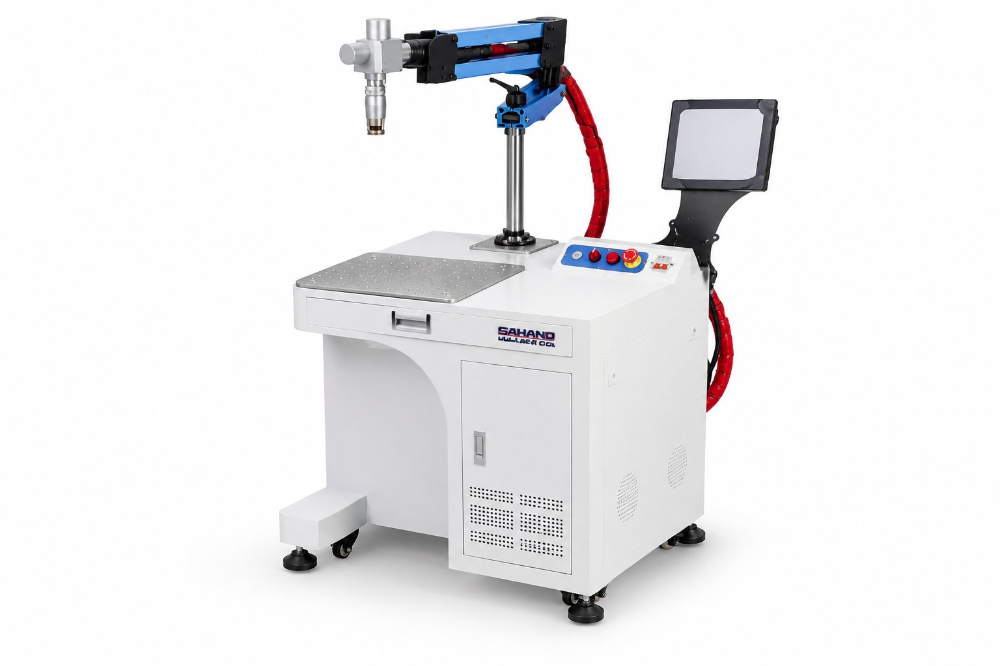

ML-004
نام و هویت محصول از فهرست ثبتشدهٔ سهند لیزر نقل شده است. اطلاعات سازنده، گزینههای خانواده و تصویر مرجع به معنی تأیید موجودی یا پیکربندی نصبشده نیست.


supplied series photograph or CAD
سند تطبیق
اطلاعات ثبتشده و دامنهٔ آن
| فناوری خانواده | UV laser marking دامنهٔ ثبت: manufacturer_manual · منبع |
|---|---|
| طول موج مرجع خانواده | 355 nm دامنهٔ ثبت: manufacturer_manual · منبع |
| نمونه بازه توان خانواده | 15 / 20 W دامنهٔ ثبت: manufacturer_manual · منبع |
| محدودیت تطبیق | مدل، منبع، توان، میدان کاری و خنککاری دستگاه UV سهند از این مرجع مستقل قابل استنتاج نیست دامنهٔ ثبت: manufacturer_manual · منبع |
منابع رکورد
- سند هویت و تطبیق رکورد
- SUNINE UV marking family reference, accessed 2026-10-13 — manufacturer_family_reference_not_installed_identity